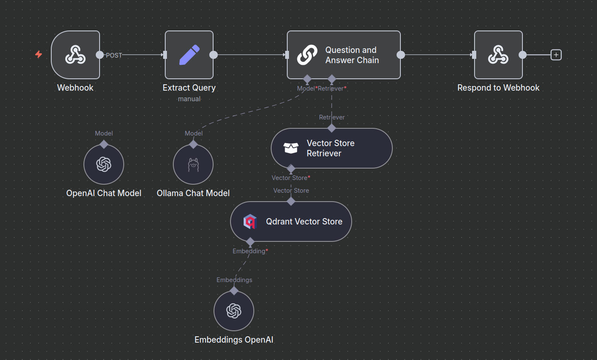
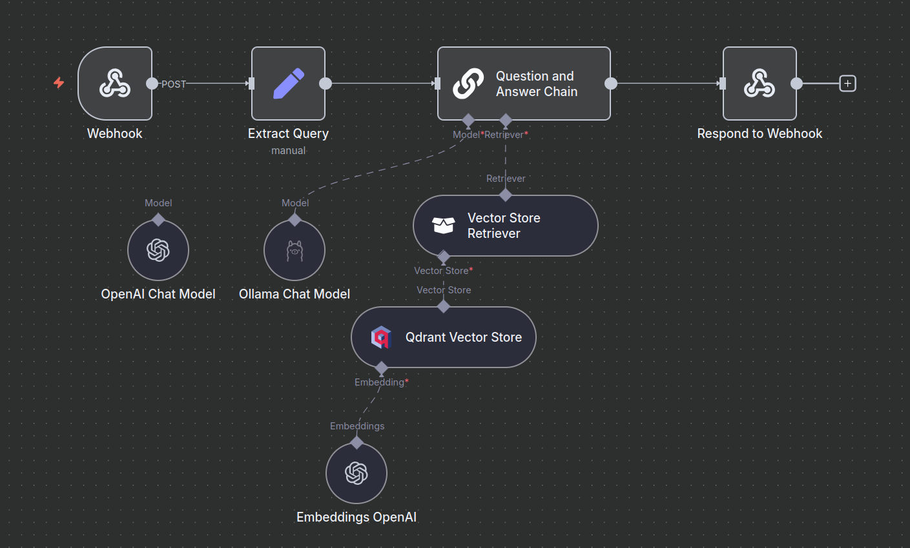

Overview
Self-hosted workflow automation platform powering AI pipelines for market intelligence, research automation, and operational workflows. Connects APIs, databases, AI models, and notification systems with visual workflow design.
Capabilities
ü§ñ AI-Powered Research
Automated news summarization, market intelligence gathering, and research paper processing using OpenAI GPT-4, Claude, and local Ollama models.
üìä Market Data Processing
Real-time forex data retrieval, technical analysis, chart generation, and automated trading signal detection with EODHD and TradingView integration.
üîç RAG Systems
Retrieval-Augmented Generation workflows with Qdrant vector database, semantic search, and hybrid retrieval for accurate question-answering.
üì± Telegram Integration
Real-time notifications, interactive commands, and mobile-first interfaces for monitoring workflows, trading signals, and system alerts.
üóÑÔ∏è Notion Automation
Automated database population, research note creation, and knowledge management with Notion API integration for structured data storage.
üìÑ Document Intelligence
PDF parsing, XML processing, web scraping, and automated summarization for extracting insights from maritime regulations and financial reports.
Featured Workflows
1. AI Market Intelligence Pipeline
Trigger: Scheduled (every 4 hours)
Components:
- EODHD News API for real-time financial news
- Dual-stage filtering (recent news + deduplication)
- OpenAI GPT-4 for news summarization
- Forex data retrieval (XAUUSD, EURUSD)
- Chart generation and technical analysis
- Notion database integration for research tracking
- Telegram notifications with formatted summaries
Output: Curated market intelligence reports with charts, summaries, and database entries
2. RAG Question-Answering System
Trigger: Webhook (POST request)
Components:
- Webhook receiver for query extraction
- Qdrant vector store retrieval (semantic search)
- OpenAI embeddings (text-embedding-3-small)
- Question-Answer Chain with context injection
- OpenAI Chat Model (GPT-4) or Ollama (local LLMs)
- Webhook response with AI-generated answers
Output: Accurate answers with source citations from indexed documents
3. Automated Document Processing
Trigger: Scheduled (daily at configured time)
Components:
- URL extraction from RSS/API feeds
- ArXiv research paper downloads
- XML parsing for metadata extraction
- PDF download and text extraction
- AI-powered summarization (GPT-4)
- Notion page creation with structured summaries
- Loop processing for batch operations
Output: Research library with automated summaries in Notion database
Technology Stack
Use Cases
Quantitative Research
Automated paper downloads, summarization, and strategy extraction for QuantConnect algorithm development.
Market Surveillance
Real-time news monitoring, sentiment analysis, and market-moving event detection with instant alerts.
Maritime Operations
Automated processing of SOLAS/MARPOL regulations, safety bulletin distribution, and compliance tracking.
Knowledge Management
Automated indexing of PDFs, research papers, and documentation into searchable vector databases.
For detailed setup instructions and workflow examples, refer to the official n8n documentation or the Local AI articles in the Publications section.